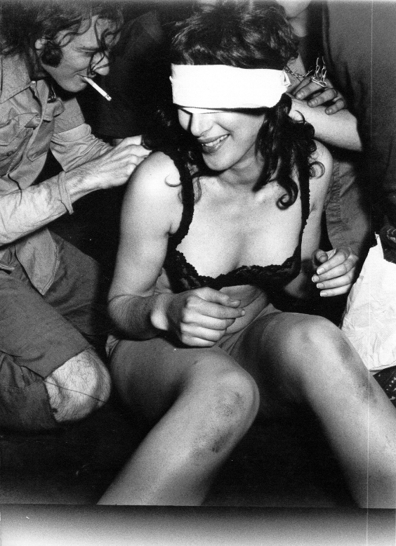
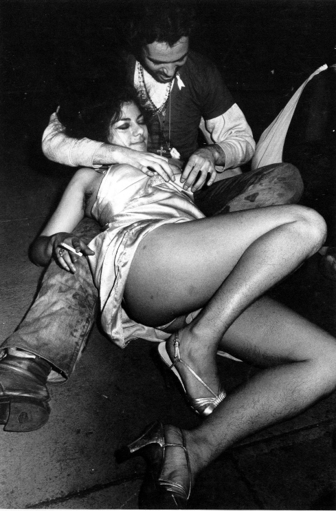
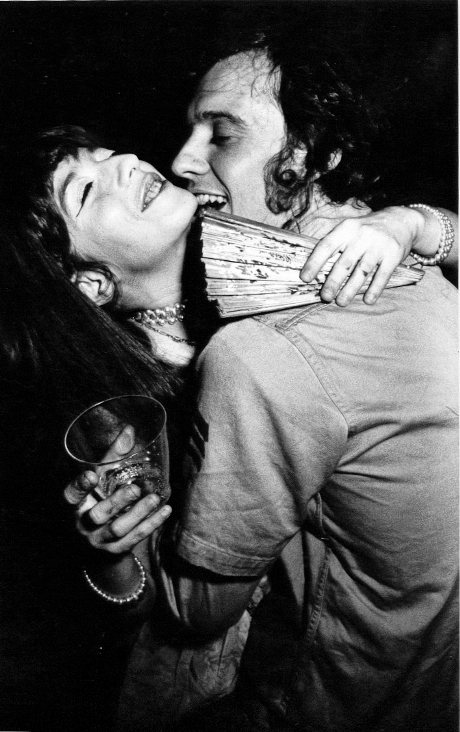
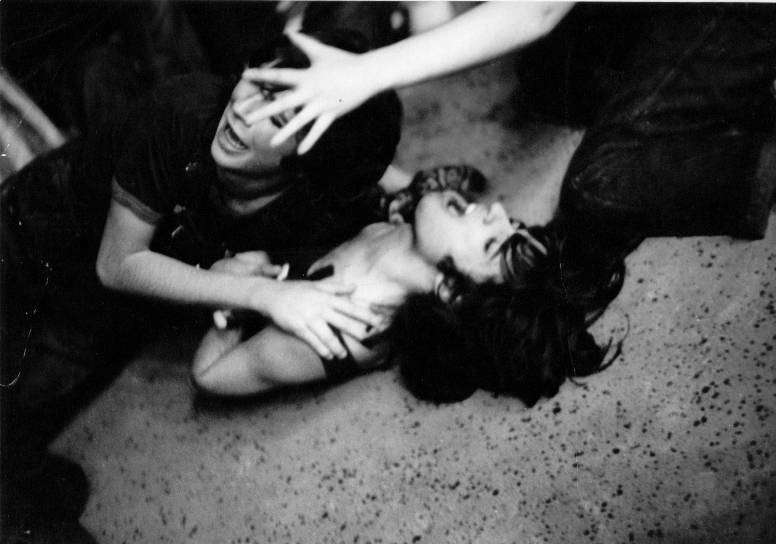
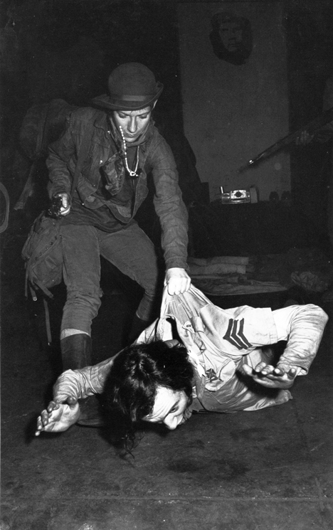
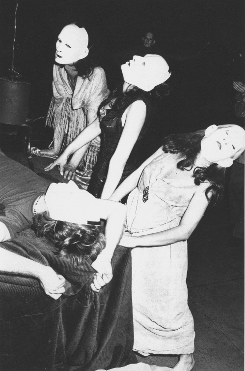

|
|
|
|
"Che Guevara" Hecho teatral dirigido por Juan Uviedo, realizado en junio del '71 en Nueva York. Estracto del escrito "Tras la pista de Uviedo: experimentos socioteatrales de un paria" (Ana Longoni, publicado en 2015 en el marco de la muestra "Con la provocación de Juan Carlos Uviedo" en México): "En junio de 1971, montó en
el circuito off-off Broadway “Che Guevara”, basada en la obra
del italiano Mario Fratti. De acuerdo con el testimonio del propio Uviedo, para
concretar esta puesta coparon “cuatro manzanas alrededor de un edificio
abandonado del New York Times (…) en apoyo a las luchas del ‘Civil Rights
Movement’” (Uviedo 2002). Al asistir al estreno, el propio autor Fratti
confiesa haber entrado en estado de shock: 'Realmente pensé que me
encontraba en un campamento de guerrilleros. (…) Un entrenamiento militar en
las calles de Nueva York. Soldados sádicos (más tarde me enteré de que muchos
de ellos eran derechistas; uno de ellos era un policía que se había infiltrado
en la compañía) estaban cazando guerrilleros bajo los techos, en sótanos, áticos
y subterráneos. Cuando alguien era capturado, realmente lo torturaban. Me sentía
descompuesto del estómago. ¿Había estado en lo correcto al escribir una obra
así?'. Aunque la entrada a la obra
era gratuita, había que someterse a una suerte de interrogatorio, ser palpado
de armas, presentar documentos y llenar formularios, en una situación semejante
a la de la “burocracia estatal de cualquier gobierno militar
latinoamericano” (Uviedo 2002). Se forzaba al público a tomar partido desde
el momento de entrar a la sala: no había chance de situarse en el centro o al
margen. Aquellos que se posicionaban a favor del Che eran situados en un sector
de la sala, la “selva boliviana”, entre mosquitos y ratas, sometidos a
intenso calor y con muy poca luz. Mientras tanto, podían observar del otro lado
de la sala, a quienes habían optado por estar del lado de la alta sociedad
boliviana, en medio de cómodos sillones, accediendo a prostitutas, licores y
drogas. Según el relato del director, la obra se prohibió y tuvo que mudarse
de sala, fue denunciada, sufrió un proceso judicial y uno de los actores terminó
preso por protagonizar una situación de sexo explícito. Una de las crónicas
aparecidas sobre la experiencia da cuenta de la incómoda experiencia: 'No
hay lugares designados para el público, que se mueven como en una feria
callejera: elegimos qué es lo que queremos ver en cada momento. (…) Tendemos
a perdernos una cantidad considerable de situaciones. El Che se parece menos a sí
mismo y más a un tipo de fluido monumento público'. En el
mismo sentido, Uviedo también señala, entrevistado por Clark: “la mayor
virtud de esa obra fue desmitificar a un hombre mistificado por la máquina
productiva del capitalismo”. Apenas tres años después del asesinato del
guerrillero argentino en Bolivia, el montaje alertaba respecto de la construcción
mediática del mito e interpelaba a los presentes respecto de posiciones “políticamente
correctas” desde la comodidad neoyorquina."
Fotos del montaje      
|